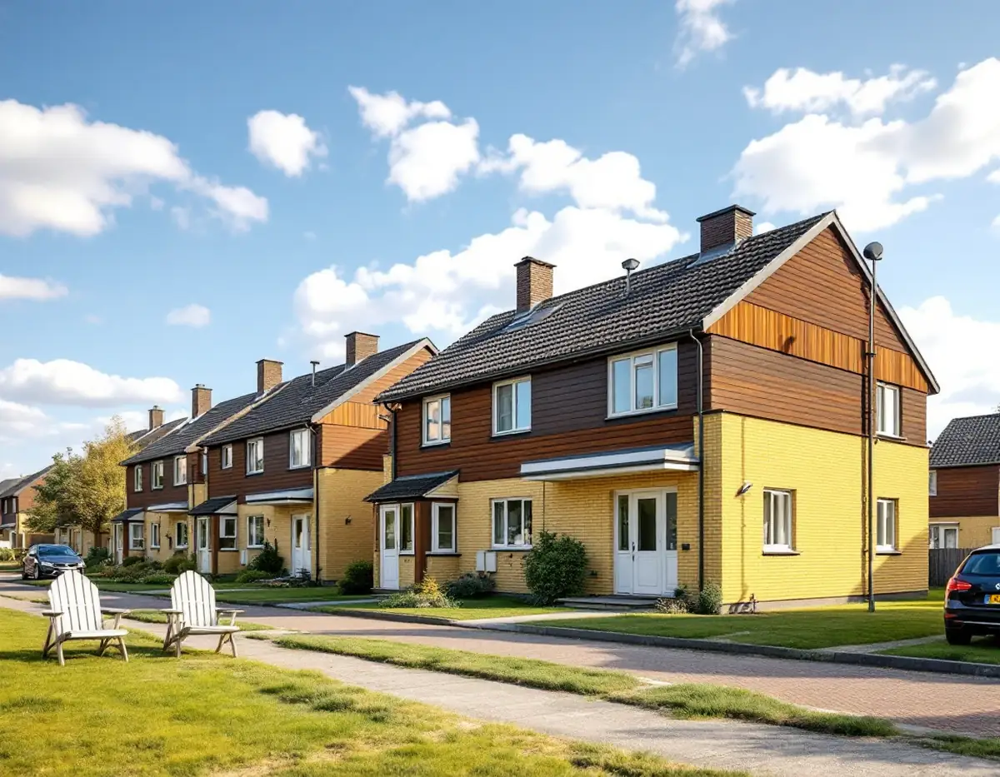
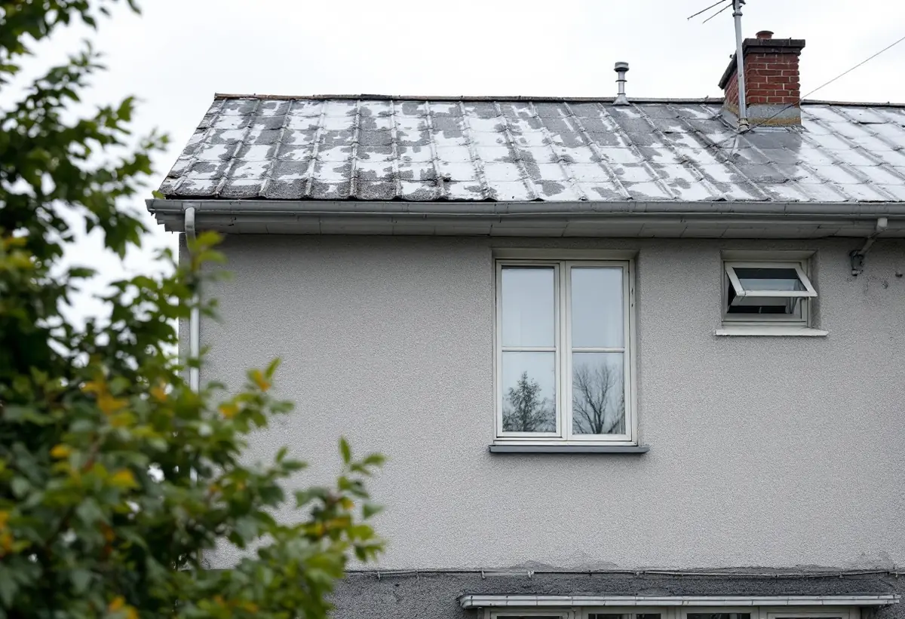
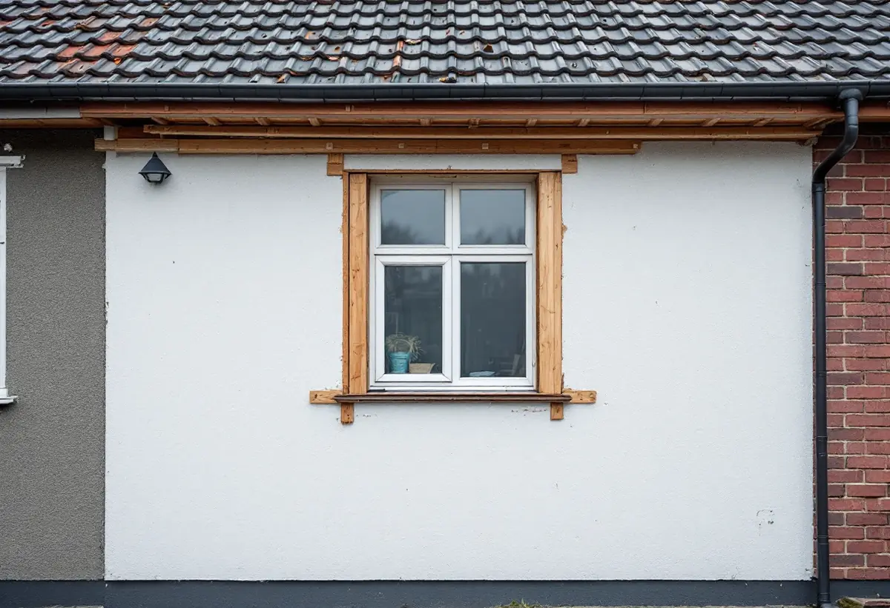

Platsbesök
Gratis besök där vi tittar på material och husgruppen.

Nästan 2 000 småhus i Skärholmens stadsdelsområde är radhus, kedjehus och villor från miljonprogrammets tid, ofta med tegel, trä och skivor på samma hus.
Beskriv jobbet kort.
Något blev fel. Kontrollera uppgifterna eller ring 08 12 410 276.
Vi tittar på jobbet på plats innan du får offert.
Du ser vad som ingår och vad det kostar.
Vi drar av ROT direkt och sköter ansökan.
Geal Entreprenad AB, Bromma. Org.nr 559303-7566.

Geal Entreprenad AB renoverar fasader på sådana hus och undersöker de gamla materialen innan något rivs.
Stadens områdesfakta för 2025 räknar 1 976 småhus med äganderätt i Skärholmens stadsdelsområde. De fördelar sig på Vårberg med 577, Skärholmen med 543, Sätra med 536 och Bredäng med 320. Lägenheterna i flerbostadshusen är däremot till största delen hyresrätter.
Stadens vägledning Varsam utveckling av småhus- och villaområden räknar alla fyra till de storskaliga stadsdelarna. Bredäng började byggas 1962 som den första stadsdelen som planerades i stor skala, och Sätra följde. Bredäng är i vägledningens tabell markerad som kulturhistoriskt värdefull miljö.

Vägledningen beskriver småhusens utformning som mer varierad än flerbostadshusens, med en blandning av fasadmaterial som tegel, trä och skivor, men med en mycket stor enhetlighet inom varje husgrupp. Färgsättningen var noga komponerad och kunde variera mellan kvarter.
En fasadrenovering på ett radhus blir därför en fråga om hela längan. Byts träpanelen på ett hus till en annan profil eller ett annat material syns det mot grannarna. Vi föreslår material som följer husgruppen och tar upp frågan med grannar eller samfällighet när det behövs.
Boverket skriver att det främst är byggnader från åren 1940–1970 som innehåller asbest, och Arbetsmiljöverket att man ska räkna med asbest i hus byggda fram till 1982. Exempel är asbestcementskivor, eternit, för tak och väggar och tillsatser i murbruk, fix och fog.
Så länge asbesten är inkapslad är den ingen fara, men bearbetas den så att det dammar blir den det. Enligt Arbetsmiljöverket ska materialen därför undersökas innan rivning och renovering, och det krävs tillstånd för att riva asbesthaltigt material. Vi provtar skivor och fogar innan vi planerar rivningen.
Boverket skriver att utvändig tilläggsisolering ofta är bäst ur fuktsynpunkt men kan ändra husets utseende: fönster hamnar längre in, takfoten skjuter ut mindre och fasaden kan hänga ut över sockeln. På hus med låga, svagt lutande tak, som vägledningen beskriver, blir takfoten särskilt känslig.
Stockholms stad skriver att fasadändringar på en- och tvåbostadshus inte längre kräver bygglov om vissa förutsättningar är uppfyllda. Det gäller inte där utökad lovplikt finns, till exempel i områden som pekats ut som särskilt kulturhistoriskt värdefulla. Om fastigheten berörs visar Stadsmuseets klassificeringskarta.
Vägledningen beskriver hur de storskaliga stadsdelarna byggdes med trafikseparering: matargator runt stadsdelarna, parkering vid bostadskvarteren och bilfria bostadsmiljöer som binds ihop av gång- och cykelvägar. Småhusområdena anlades med samma slags trafiksystem.
För en fasadrenovering betyder det att ställning, material och rivningsmassor ofta bärs eller körs med små maskiner från parkeringen till huset. Vi planerar upplaget tillsammans med grannarna eller samfälligheten så att gångvägarna går att använda under arbetet.
Gratis besök där vi tittar på material och husgruppen.
Skivor, fogar och fix undersöks för asbest.
Klassning och om lov krävs.
Material och kulör som följer längan.
Rivning, eventuell isolering och ny fasad.
Plåt, foder och slutkontroll.
Äger du ett småhus ger fasadrenovering rotavdrag på arbetskostnaden. Avdraget är högst 30 procent och högst 50 000 kronor per person och år, och material och resor ger inget avdrag.
Bor du i en bostadsrätt är fasaden föreningens, och då ger arbetet inget avdrag för dig. Där avdraget gäller drar Geal det direkt på fakturan.
Fasadens yta och material, om asbest måste saneras, om huset tilläggsisoleras, anslutningar mot grannhusen och om lov krävs. Efter ett gratis platsbesök får du ett skriftligt kostnadsförslag.
Puts, panel och tilläggsisolering.
Fasadrenovering i Stockholm →Takbyte, takbesiktning och plåtarbeten.
Takläggare i Skärholmen →Radhus i grupper i Bredäng, Sätra och Vårberg.
Takrenovering i Skärholmen →Radhustomterna och grannarna.
Attefallshus i Skärholmen →Radhusen, källarplanet och golvbrunnen.
Badrumsrenovering i Skärholmen →Hela ombyggnaden av radhuset.
Byggföretag i Skärholmen →Radhusen från 60- och 70-tal.
Fasadmålning i Skärholmen →Radhus i sammanhållna husgrupper.
Fönsterbyte i Skärholmen →Miljonprogrammets radhus.
Fönsterrenovering i Skärholmen →Nya golv i radhus och lägenheter.
Golvläggare i Skärholmen →Parkett och lamellgolv från 1960-talet.
Golvslipning i Skärholmen →1960-talskök, bostadsrätt och radhus.
Köksrenovering i Skärholmen →Lägenheter, trapphus och radhus.
Målare i Skärholmen →Rännor och stuprör i sluttningarna.
Plåtslagare i Skärholmen →Altan, plank och förråd vid radhuset.
Snickare i Skärholmen →Egna radhus i Sätra, Bredäng och Vårberg.
Takbyte i Skärholmen →Ny tapet i hyresrätt och bostadsrätt.
Tapetsering i Skärholmen →Radhusen, uterum och skärmtak.
Tillbyggnad i Skärholmen →Renovera hela huset eller lägenheten.
Totalrenovering i Skärholmen →Eller ring 08 12 410 276, mån–fre 08–17.
Beskriv jobbet kort.
Något blev fel. Kontrollera uppgifterna eller ring 08 12 410 276.